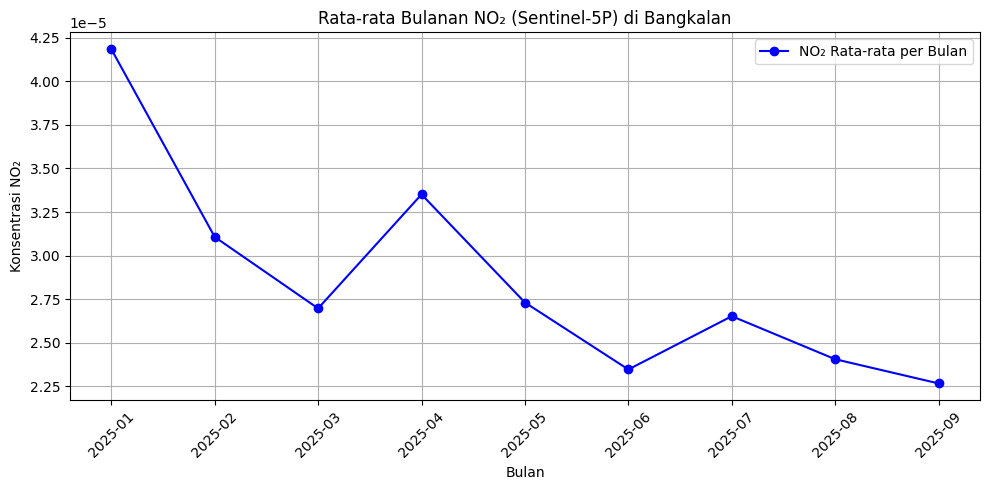

Data Understanding (Pengambilan dan Eksplorasi Data NO2 Di Kabupaten Bangkalan)#
!pip install openeo
Requirement already satisfied: openeo in c:\python311\lib\site-packages (0.45.0)
Requirement already satisfied: requests>=2.26.0 in c:\python311\lib\site-packages (from openeo) (2.32.5)
Requirement already satisfied: urllib3>=1.9.0 in c:\python311\lib\site-packages (from openeo) (2.5.0)
Requirement already satisfied: shapely>=1.6.4 in c:\python311\lib\site-packages (from openeo) (2.1.2)
Requirement already satisfied: numpy>=1.17.0 in c:\python311\lib\site-packages (from openeo) (1.26.4)
Requirement already satisfied: xarray<2025.01.2,>=0.12.3 in c:\python311\lib\site-packages (from openeo) (2025.1.1)
Requirement already satisfied: pandas>0.20.0 in c:\python311\lib\site-packages (from openeo) (2.1.4)
Requirement already satisfied: pystac>=1.5.0 in c:\python311\lib\site-packages (from openeo) (1.14.1)
Requirement already satisfied: deprecated>=1.2.12 in c:\python311\lib\site-packages (from openeo) (1.2.18)
Requirement already satisfied: oschmod>=0.3.12 in c:\python311\lib\site-packages (from openeo) (0.3.12)
Requirement already satisfied: packaging>=23.2 in c:\python311\lib\site-packages (from xarray<2025.01.2,>=0.12.3->openeo) (25.0)
Requirement already satisfied: wrapt<2,>=1.10 in c:\python311\lib\site-packages (from deprecated>=1.2.12->openeo) (1.14.2)
Requirement already satisfied: pywin32 in c:\python311\lib\site-packages (from oschmod>=0.3.12->openeo) (311)
Requirement already satisfied: python-dateutil>=2.8.2 in c:\python311\lib\site-packages (from pandas>0.20.0->openeo) (2.9.0.post0)
Requirement already satisfied: pytz>=2020.1 in c:\python311\lib\site-packages (from pandas>0.20.0->openeo) (2025.2)
Requirement already satisfied: tzdata>=2022.1 in c:\python311\lib\site-packages (from pandas>0.20.0->openeo) (2025.2)
Requirement already satisfied: six>=1.5 in c:\python311\lib\site-packages (from python-dateutil>=2.8.2->pandas>0.20.0->openeo) (1.17.0)
Requirement already satisfied: charset_normalizer<4,>=2 in c:\python311\lib\site-packages (from requests>=2.26.0->openeo) (3.4.4)
Requirement already satisfied: idna<4,>=2.5 in c:\python311\lib\site-packages (from requests>=2.26.0->openeo) (3.11)
Requirement already satisfied: certifi>=2017.4.17 in c:\python311\lib\site-packages (from requests>=2.26.0->openeo) (2025.10.5)
Penjelasan: Menginstal library openeo yang diperlukan untuk mengakses data satelit dari Copernicus Data Space Ecosystem. OpenEO adalah API standar untuk mengakses data Earth Observation secara cloud-based.
import openeo
import pandas as pd
import matplotlib.pyplot as plt
Penjelasan:
openeo: Untuk koneksi ke layanan data satelit
pandas: Untuk manipulasi dan analisis data
matplotlib.pyplot: Untuk visualisasi data
Koneksi ke Copernicus Data Space#
# 1. Koneksi ke Copernicus Data Space
connection = openeo.connect("openeo.dataspace.copernicus.eu").authenticate_oidc()
---------------------------------------------------------------------------
TimeoutError Traceback (most recent call last)
File C:\Python311\Lib\site-packages\urllib3\connectionpool.py:464, in HTTPConnectionPool._make_request(self, conn, method, url, body, headers, retries, timeout, chunked, response_conn, preload_content, decode_content, enforce_content_length)
463 try:
--> 464 self._validate_conn(conn)
465 except (SocketTimeout, BaseSSLError) as e:
File C:\Python311\Lib\site-packages\urllib3\connectionpool.py:1093, in HTTPSConnectionPool._validate_conn(self, conn)
1092 if conn.is_closed:
-> 1093 conn.connect()
1095 # TODO revise this, see https://github.com/urllib3/urllib3/issues/2791
File C:\Python311\Lib\site-packages\urllib3\connection.py:790, in HTTPSConnection.connect(self)
788 server_hostname_rm_dot = server_hostname.rstrip(".")
--> 790 sock_and_verified = _ssl_wrap_socket_and_match_hostname(
791 sock=sock,
792 cert_reqs=self.cert_reqs,
793 ssl_version=self.ssl_version,
794 ssl_minimum_version=self.ssl_minimum_version,
795 ssl_maximum_version=self.ssl_maximum_version,
796 ca_certs=self.ca_certs,
797 ca_cert_dir=self.ca_cert_dir,
798 ca_cert_data=self.ca_cert_data,
799 cert_file=self.cert_file,
800 key_file=self.key_file,
801 key_password=self.key_password,
802 server_hostname=server_hostname_rm_dot,
803 ssl_context=self.ssl_context,
804 tls_in_tls=tls_in_tls,
805 assert_hostname=self.assert_hostname,
806 assert_fingerprint=self.assert_fingerprint,
807 )
808 self.sock = sock_and_verified.socket
File C:\Python311\Lib\site-packages\urllib3\connection.py:969, in _ssl_wrap_socket_and_match_hostname(sock, cert_reqs, ssl_version, ssl_minimum_version, ssl_maximum_version, cert_file, key_file, key_password, ca_certs, ca_cert_dir, ca_cert_data, assert_hostname, assert_fingerprint, server_hostname, ssl_context, tls_in_tls)
967 server_hostname = normalized
--> 969 ssl_sock = ssl_wrap_socket(
970 sock=sock,
971 keyfile=key_file,
972 certfile=cert_file,
973 key_password=key_password,
974 ca_certs=ca_certs,
975 ca_cert_dir=ca_cert_dir,
976 ca_cert_data=ca_cert_data,
977 server_hostname=server_hostname,
978 ssl_context=context,
979 tls_in_tls=tls_in_tls,
980 )
982 try:
File C:\Python311\Lib\site-packages\urllib3\util\ssl_.py:480, in ssl_wrap_socket(sock, keyfile, certfile, cert_reqs, ca_certs, server_hostname, ssl_version, ciphers, ssl_context, ca_cert_dir, key_password, ca_cert_data, tls_in_tls)
478 context.set_alpn_protocols(ALPN_PROTOCOLS)
--> 480 ssl_sock = _ssl_wrap_socket_impl(sock, context, tls_in_tls, server_hostname)
481 return ssl_sock
File C:\Python311\Lib\site-packages\urllib3\util\ssl_.py:524, in _ssl_wrap_socket_impl(sock, ssl_context, tls_in_tls, server_hostname)
522 return SSLTransport(sock, ssl_context, server_hostname)
--> 524 return ssl_context.wrap_socket(sock, server_hostname=server_hostname)
File C:\Python311\Lib\ssl.py:517, in SSLContext.wrap_socket(self, sock, server_side, do_handshake_on_connect, suppress_ragged_eofs, server_hostname, session)
511 def wrap_socket(self, sock, server_side=False,
512 do_handshake_on_connect=True,
513 suppress_ragged_eofs=True,
514 server_hostname=None, session=None):
515 # SSLSocket class handles server_hostname encoding before it calls
516 # ctx._wrap_socket()
--> 517 return self.sslsocket_class._create(
518 sock=sock,
519 server_side=server_side,
520 do_handshake_on_connect=do_handshake_on_connect,
521 suppress_ragged_eofs=suppress_ragged_eofs,
522 server_hostname=server_hostname,
523 context=self,
524 session=session
525 )
File C:\Python311\Lib\ssl.py:1104, in SSLSocket._create(cls, sock, server_side, do_handshake_on_connect, suppress_ragged_eofs, server_hostname, context, session)
1103 raise ValueError("do_handshake_on_connect should not be specified for non-blocking sockets")
-> 1104 self.do_handshake()
1105 except:
File C:\Python311\Lib\ssl.py:1382, in SSLSocket.do_handshake(self, block)
1381 self.settimeout(None)
-> 1382 self._sslobj.do_handshake()
1383 finally:
TimeoutError: _ssl.c:989: The handshake operation timed out
The above exception was the direct cause of the following exception:
ReadTimeoutError Traceback (most recent call last)
File C:\Python311\Lib\site-packages\requests\adapters.py:644, in HTTPAdapter.send(self, request, stream, timeout, verify, cert, proxies)
643 try:
--> 644 resp = conn.urlopen(
645 method=request.method,
646 url=url,
647 body=request.body,
648 headers=request.headers,
649 redirect=False,
650 assert_same_host=False,
651 preload_content=False,
652 decode_content=False,
653 retries=self.max_retries,
654 timeout=timeout,
655 chunked=chunked,
656 )
658 except (ProtocolError, OSError) as err:
File C:\Python311\Lib\site-packages\urllib3\connectionpool.py:841, in HTTPConnectionPool.urlopen(self, method, url, body, headers, retries, redirect, assert_same_host, timeout, pool_timeout, release_conn, chunked, body_pos, preload_content, decode_content, **response_kw)
839 new_e = ProtocolError("Connection aborted.", new_e)
--> 841 retries = retries.increment(
842 method, url, error=new_e, _pool=self, _stacktrace=sys.exc_info()[2]
843 )
844 retries.sleep()
File C:\Python311\Lib\site-packages\urllib3\util\retry.py:474, in Retry.increment(self, method, url, response, error, _pool, _stacktrace)
473 if read is False or method is None or not self._is_method_retryable(method):
--> 474 raise reraise(type(error), error, _stacktrace)
475 elif read is not None:
File C:\Python311\Lib\site-packages\urllib3\util\util.py:39, in reraise(tp, value, tb)
38 raise value.with_traceback(tb)
---> 39 raise value
40 finally:
File C:\Python311\Lib\site-packages\urllib3\connectionpool.py:787, in HTTPConnectionPool.urlopen(self, method, url, body, headers, retries, redirect, assert_same_host, timeout, pool_timeout, release_conn, chunked, body_pos, preload_content, decode_content, **response_kw)
786 # Make the request on the HTTPConnection object
--> 787 response = self._make_request(
788 conn,
789 method,
790 url,
791 timeout=timeout_obj,
792 body=body,
793 headers=headers,
794 chunked=chunked,
795 retries=retries,
796 response_conn=response_conn,
797 preload_content=preload_content,
798 decode_content=decode_content,
799 **response_kw,
800 )
802 # Everything went great!
File C:\Python311\Lib\site-packages\urllib3\connectionpool.py:488, in HTTPConnectionPool._make_request(self, conn, method, url, body, headers, retries, timeout, chunked, response_conn, preload_content, decode_content, enforce_content_length)
487 new_e = _wrap_proxy_error(new_e, conn.proxy.scheme)
--> 488 raise new_e
490 # conn.request() calls http.client.*.request, not the method in
491 # urllib3.request. It also calls makefile (recv) on the socket.
File C:\Python311\Lib\site-packages\urllib3\connectionpool.py:466, in HTTPConnectionPool._make_request(self, conn, method, url, body, headers, retries, timeout, chunked, response_conn, preload_content, decode_content, enforce_content_length)
465 except (SocketTimeout, BaseSSLError) as e:
--> 466 self._raise_timeout(err=e, url=url, timeout_value=conn.timeout)
467 raise
File C:\Python311\Lib\site-packages\urllib3\connectionpool.py:367, in HTTPConnectionPool._raise_timeout(self, err, url, timeout_value)
366 if isinstance(err, SocketTimeout):
--> 367 raise ReadTimeoutError(
368 self, url, f"Read timed out. (read timeout={timeout_value})"
369 ) from err
371 # See the above comment about EAGAIN in Python 3.
ReadTimeoutError: HTTPSConnectionPool(host='identity.dataspace.copernicus.eu', port=443): Read timed out. (read timeout=20)
During handling of the above exception, another exception occurred:
ReadTimeout Traceback (most recent call last)
File C:\Python311\Lib\site-packages\openeo\rest\auth\oidc.py:272, in OidcProviderInfo.__init__(self, issuer, discovery_url, scopes, provider_id, title, default_clients, requests_session)
271 try:
--> 272 discovery_resp = requests_session.get(self.discovery_url, timeout=20)
273 discovery_resp.raise_for_status()
File C:\Python311\Lib\site-packages\requests\sessions.py:602, in Session.get(self, url, **kwargs)
601 kwargs.setdefault("allow_redirects", True)
--> 602 return self.request("GET", url, **kwargs)
File C:\Python311\Lib\site-packages\requests\sessions.py:589, in Session.request(self, method, url, params, data, headers, cookies, files, auth, timeout, allow_redirects, proxies, hooks, stream, verify, cert, json)
588 send_kwargs.update(settings)
--> 589 resp = self.send(prep, **send_kwargs)
591 return resp
File C:\Python311\Lib\site-packages\requests\sessions.py:703, in Session.send(self, request, **kwargs)
702 # Send the request
--> 703 r = adapter.send(request, **kwargs)
705 # Total elapsed time of the request (approximately)
File C:\Python311\Lib\site-packages\requests\adapters.py:690, in HTTPAdapter.send(self, request, stream, timeout, verify, cert, proxies)
689 elif isinstance(e, ReadTimeoutError):
--> 690 raise ReadTimeout(e, request=request)
691 elif isinstance(e, _InvalidHeader):
ReadTimeout: HTTPSConnectionPool(host='identity.dataspace.copernicus.eu', port=443): Read timed out. (read timeout=20)
The above exception was the direct cause of the following exception:
OidcException Traceback (most recent call last)
Cell In[3], line 2
1 # 1. Koneksi ke Copernicus Data Space
----> 2 connection = openeo.connect("openeo.dataspace.copernicus.eu").authenticate_oidc()
File C:\Python311\Lib\site-packages\openeo\rest\connection.py:587, in Connection.authenticate_oidc(self, provider_id, client_id, client_secret, store_refresh_token, use_pkce, display, max_poll_time)
584 raise ValueError(f"Unhandled auth method {auth_method}")
586 _g = DefaultOidcClientGrant # alias for compactness
--> 587 provider_id, client_info = self._get_oidc_provider_and_client_info(
588 provider_id=provider_id, client_id=client_id, client_secret=client_secret,
589 default_client_grant_check=lambda grants: (
590 _g.REFRESH_TOKEN in grants and (_g.DEVICE_CODE in grants or _g.DEVICE_CODE_PKCE in grants)
591 )
592 )
594 # Try refresh token first.
595 refresh_token = self._get_refresh_token_store().get_refresh_token(
596 issuer=client_info.provider.issuer,
597 client_id=client_info.client_id
598 )
File C:\Python311\Lib\site-packages\openeo\rest\connection.py:315, in Connection._get_oidc_provider_and_client_info(self, provider_id, client_id, client_secret, default_client_grant_check)
300 def _get_oidc_provider_and_client_info(
301 self,
302 provider_id: str,
(...) 305 default_client_grant_check: Union[None, GrantsChecker] = None,
306 ) -> Tuple[str, OidcClientInfo]:
307 """
308 Resolve provider_id and client info (as given or from config)
309
(...) 313 :return: OIDC provider id and client info
314 """
--> 315 provider_id, provider = self._get_oidc_provider(provider_id)
317 if client_id is None:
318 _log.debug("No client_id: checking config for preferred client_id")
File C:\Python311\Lib\site-packages\openeo\rest\connection.py:296, in Connection._get_oidc_provider(self, provider_id, parse_info)
291 provider_id, provider = providers.popitem(last=False)
292 _log.info(
293 f"No OIDC provider given. Using first provider {provider_id!r} as advertised by backend."
294 )
--> 296 provider_info = OidcProviderInfo.from_dict(provider) if parse_info else None
298 return provider_id, provider_info
File C:\Python311\Lib\site-packages\openeo\rest\auth\oidc.py:286, in OidcProviderInfo.from_dict(cls, data)
284 @classmethod
285 def from_dict(cls, data: dict) -> OidcProviderInfo:
--> 286 return cls(
287 provider_id=data["id"],
288 title=data["title"],
289 issuer=data["issuer"],
290 scopes=data.get("scopes"),
291 default_clients=data.get("default_clients"),
292 )
File C:\Python311\Lib\site-packages\openeo\rest\auth\oidc.py:276, in OidcProviderInfo.__init__(self, issuer, discovery_url, scopes, provider_id, title, default_clients, requests_session)
274 self.config = discovery_resp.json()
275 except Exception as e:
--> 276 raise OidcException(f"Failed to obtain OIDC discovery document from {self.discovery_url!r}: {e!r}") from e
277 self.issuer = issuer or self.config["issuer"]
278 # Minimal set of scopes to request
OidcException: Failed to obtain OIDC discovery document from 'https://identity.dataspace.copernicus.eu/auth/realms/CDSE/.well-known/openid-configuration': ReadTimeout(ReadTimeoutError("HTTPSConnectionPool(host='identity.dataspace.copernicus.eu', port=443): Read timed out. (read timeout=20)"))
Penjelasan: Membuat koneksi ke server Copernicus Data Space menggunakan autentikasi OIDC (OpenID Connect).
Koordinat Daerah Bangkalan#
Disini saya menggunakan koordinat bangkalan yang dimana koordinat ini di dapat melalui Website geojson geojson.io
# 2. AOI
aoi = {
"type": "Polygon",
"coordinates": [
[
[112.66348800282009, -7.007389234733083],
[112.66348800282009, -7.179646382822568],
[112.97492116433409, -7.179646382822568],
[112.97492116433409, -7.007389234733083],
[112.66348800282009, -7.007389234733083],
]
],
}
Penjelasan: Mendefinisikan Area of Interest (AOI) dalam format GeoJSON polygon yang mencakup wilayah Kabupaten Bangkalan.
s5p = connection.load_collection(
"SENTINEL_5P_L2",
spatial_extent={
"west": 112.66348800282009,
"south": -7.179646382822568,
"east": 112.97492116433409,
"north": -7.007389234733083,
},
temporal_extent=["2025-01-01", "2025-10-01"],
bands=["NO2"],
)
Penjelasan:
Memuat koleksi data Sentinel-5P Level 2
spatial_extent: Membatasi data sesuai koordinat Bangkalan
temporal_extent: Periode data dari 1 Januari 2025 - 1 Oktober 2025
bands: Hanya mengambil band NO₂ (nitrogen dioksida)
Pengambilan Data NO2#
# 4. Mask nilai negatif (data invalid)
def mask_invalid(x):
return x < 0
s5p_masked = s5p.mask(s5p.apply(mask_invalid))
# 5. Agregasi temporal harian
daily_mean = s5p_masked.aggregate_temporal_period(period="day", reducer="mean")
# 6. Agregasi spasial (rata-rata dalam AOI)
daily_mean_aoi = daily_mean.aggregate_spatial(geometries=aoi, reducer="mean")
# 7. Jalankan batch job dan hasilkan file CSV
job = daily_mean_aoi.execute_batch(out_format="CSV",)
# 8. Unduh hasil job
results = job.get_results()
results.download_files("no2_results")
0:00:00 Job 'j-2510280316384b37b6580aabf7c9d4bc': send 'start'
0:00:13 Job 'j-2510280316384b37b6580aabf7c9d4bc': created (progress 0%)
0:00:18 Job 'j-2510280316384b37b6580aabf7c9d4bc': created (progress 0%)
0:00:25 Job 'j-2510280316384b37b6580aabf7c9d4bc': created (progress 0%)
0:00:33 Job 'j-2510280316384b37b6580aabf7c9d4bc': running (progress N/A)
0:00:43 Job 'j-2510280316384b37b6580aabf7c9d4bc': running (progress N/A)
0:00:56 Job 'j-2510280316384b37b6580aabf7c9d4bc': running (progress N/A)
0:01:11 Job 'j-2510280316384b37b6580aabf7c9d4bc': running (progress N/A)
0:01:30 Job 'j-2510280316384b37b6580aabf7c9d4bc': running (progress N/A)
0:01:55 Job 'j-2510280316384b37b6580aabf7c9d4bc': running (progress N/A)
0:02:25 Job 'j-2510280316384b37b6580aabf7c9d4bc': running (progress N/A)
0:03:03 Job 'j-2510280316384b37b6580aabf7c9d4bc': finished (progress 100%)
[WindowsPath('no2_results/timeseries.csv'),
WindowsPath('no2_results/job-results.json')]
Penjelasan:
Masking: Menghilangkan nilai negatif yang merupakan data invalid
Agregasi temporal: Menghitung rata-rata harian dari multiple pengukuran per hari
Agregasi spasial: Menghitung rata-rata spasial dalam AOI Bangkalan
Batch processing: Menjalankan pemrosesan di server dan mengunduh hasil dalam format CSV
import os
import shutil
old_name = "no2_results/timeseries.csv"
new_name = "no2_results/no2_bangkalan_data.csv"
if os.path.exists(old_name):
shutil.move(old_name, new_name)
print(f"File renamed from 'timeseries.csv' to 'no2_bangkalan_data.csv'")
else:
print("File timeseries.csv not found")
File renamed from 'timeseries.csv' to 'no2_bangkalan_data.csv'
Penjelasan: Mengganti nama file default “timeseries.csv” menjadi “no2_bangkalan_data.csv” untuk penamaan yang lebih deskriptif.
# 9. Baca file CSV hasil
import os
df =pd.read_csv(os.path.join("no2_results", "no2_bangkalan_data.csv"))
# 10. Pastikan kolom tanggal benar
df["date"] = pd.to_datetime(df["date"])
# 11. Buat kolom bulan (YYYY-MM)
df["month"] = df["date"].dt.to_period("M")
# 12. Hitung rata-rata NO2 per bulan
df_monthly = df.groupby("month", as_index=False)["NO2"].mean()
df
C:\Users\Harits Putra Junaidi\AppData\Local\Temp\ipykernel_8816\3399061483.py:5: UserWarning: Converting to PeriodArray/Index representation will drop timezone information.
df["month"] = df["date"].dt.to_period("M")
| date | feature_index | NO2 | month | |
|---|---|---|---|---|
| 0 | 2025-07-09 00:00:00+00:00 | 0 | 0.000055 | 2025-07 |
| 1 | 2025-07-07 00:00:00+00:00 | 0 | 0.000047 | 2025-07 |
| 2 | 2025-07-05 00:00:00+00:00 | 0 | 0.000026 | 2025-07 |
| 3 | 2025-07-06 00:00:00+00:00 | 0 | NaN | 2025-07 |
| 4 | 2025-07-08 00:00:00+00:00 | 0 | 0.000017 | 2025-07 |
| ... | ... | ... | ... | ... |
| 269 | 2025-09-07 00:00:00+00:00 | 0 | 0.000021 | 2025-09 |
| 270 | 2025-09-09 00:00:00+00:00 | 0 | 0.000032 | 2025-09 |
| 271 | 2025-09-05 00:00:00+00:00 | 0 | 0.000020 | 2025-09 |
| 272 | 2025-09-30 00:00:00+00:00 | 0 | NaN | 2025-09 |
| 273 | 2025-09-29 00:00:00+00:00 | 0 | 0.000028 | 2025-09 |
274 rows × 4 columns
Mengecek Jumlah Missing Value#
NO2 = pd.read_csv('no2_results/no2_bangkalan_data.csv')
NO2 = NO2.sort_values(by='date')
NO2.isnull().sum()
date 0
feature_index 0
NO2 102
dtype: int64
missing_count = NO2.isnull().sum()
missing_percent = (missing_count / len(NO2)) * 100
missing_table = pd.DataFrame({
'Missing Count': missing_count,
'Missing Percent (%)': missing_percent.round(2)
})
missing_table
| Missing Count | Missing Percent (%) | |
|---|---|---|
| date | 0 | 0.00 |
| feature_index | 0 | 0.00 |
| NO2 | 102 | 37.23 |
missing_count = NO2.isnull().sum()
missing_percent = (missing_count / len(NO2)) * 100
fig, ax = plt.subplots(figsize=(7,5))
bars = ax.bar(missing_count.index, missing_count)
ax.set_title("Frekuensi Missing Values per Kolom")
ax.set_ylabel("Jumlah Missing")
for i, v in enumerate(missing_count):
ax.text(i, v + 0.5, f"{v} ({missing_percent[i]:.1f}%)",
ha='center', va='bottom', fontsize=9)
plt.tight_layout()
plt.show()
C:\Users\Harits Putra Junaidi\AppData\Local\Temp\ipykernel_8816\3930139431.py:12: FutureWarning: Series.__getitem__ treating keys as positions is deprecated. In a future version, integer keys will always be treated as labels (consistent with DataFrame behavior). To access a value by position, use `ser.iloc[pos]`
ax.text(i, v + 0.5, f"{v} ({missing_percent[i]:.1f}%)",

Mengecek Informasi Dataset#
NO2.info()
<class 'pandas.core.frame.DataFrame'>
Index: 274 entries, 262 to 272
Data columns (total 3 columns):
# Column Non-Null Count Dtype
--- ------ -------------- -----
0 date 274 non-null object
1 feature_index 274 non-null int64
2 NO2 172 non-null float64
dtypes: float64(1), int64(1), object(1)
memory usage: 8.6+ KB
Visualisasi Rata-Rata Kualitas Udara NO2 Setiap Bulan di Bangkalan#
# Baca data
df = pd.read_csv("no2_results/no2_bangkalan_data.csv")
df["date"] = pd.to_datetime(df["date"])
df["month"] = df["date"].dt.to_period("M")
df_monthly = df.groupby("month", as_index=False)["NO2"].mean()
# 13. Visualisasi hasil
plt.figure(figsize=(10,5))
plt.plot(df_monthly["month"].astype(str), df_monthly["NO2"], marker="o", color="blue", label="NO₂ Rata-rata per Bulan")
plt.title("Rata-rata Bulanan NO₂ (Sentinel-5P) di Bangkalan")
plt.xlabel("Bulan")
plt.ylabel("Konsentrasi NO₂")
plt.xticks(rotation=45)
plt.grid(True)
plt.legend()
plt.tight_layout()
plt.show()
C:\Users\Harits Putra Junaidi\AppData\Local\Temp\ipykernel_8816\3279999190.py:6: UserWarning: Converting to PeriodArray/Index representation will drop timezone information.
df["month"] = df["date"].dt.to_period("M")
